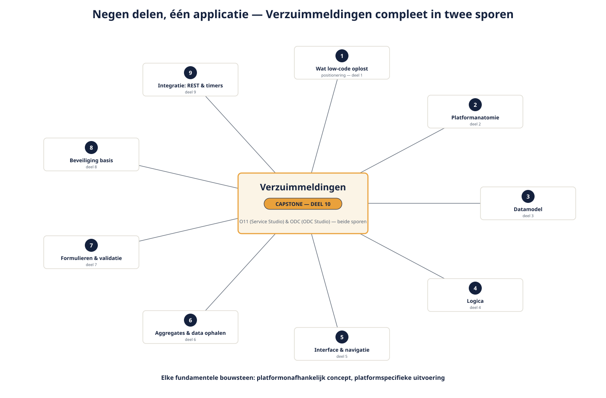

Deel 10 — Capstone: Verzuimmeldingen compleet, en de verdediging
Slidedeck · Ductus-cursus OutSystems · Niveau 1 — Fundament · deel 10 van 30 · 13 slides
Slide 1 — Title: OutSystems: Fundament
OutSystems: Fundament
Deel 10 — Capstone: Verzuimmeldingen compleet
Slide 2 — Bullets: Negen delen, twee sporen, één applicatie
Negen delen, twee sporen, één applicatie
- Platformanatomie → datamodel → logica → interface
- Data ophalen → schrijfkant → beveiliging → integratie
- Vandaag: samenbrengen en verantwoorden

Slide 3 — Section: De opdracht
De opdracht
Slide 4 — Bullets: Checklist: Verzuimmeldingen compleet
Checklist: Verzuimmeldingen compleet
- MeldingOverzicht + MeldingDetail + StatusBadge
- MeldingInvoer met volledige validatie
- Rollen correct op schermen én datafiltering
- Mutatie-API-integratie met foutafhandeling
- Paginering
Slide 5 — Section: De verdediging: drie rollen
De verdediging: drie rollen
Slide 6 — Bullets: Consument — HR-medewerker
Consument — HR-medewerker
Gebruiksgemak
"Waarom moet ik dit invullen? Wat als ik een fout maak?"
Slide 7 — Bullets: Beheerder — Meridiaan IT
Beheerder — Meridiaan IT
Beheersbaarheid
"Wie kan bij welke data? Wat als de API down is?"
Slide 8 — Bullets: Stuurgroeplid
Stuurgroeplid
Zakelijke afweging
"Waarom twee sporen? Wat kost dat, wat levert het op?"
Slide 9 — Statement: Niet: dat je een keuze maakte.
Niet: dat je een keuze maakte.
Wél: waarom.
Slide 10 — Table: Rubric — vier criteria
Rubric — vier criteria
| Criterium | Waar het om gaat |
|---|---|
| Functionele volledigheid | Werkt de applicatie, in beide sporen? |
| Verantwoording van keuzes | Kun je uitleggen waarom? |
| Rolgevoeligheid | Pas je je antwoord aan op wie het vraagt? |
| Omgaan met eigen gebreken | Erken je zelf wat nog niet af is? |
Slide 11 — Opdracht: Verdediging
Verdediging
20 minuten: 10 toelichting, 10 vragen
→ Werkboek, voorbereidingsvragen per rol
Slide 12 — Bullets: Kernpunten niveau 1
Kernpunten niveau 1
- Low-code verschuift complexiteit, elimineert haar niet
- Elke fundamentele bouwsteen: platformonafhankelijk concept, platformspecifieke uitvoering
- Grootste kantelpunt tot nu toe: gebruikersbeheer (IT Users vs IAM)
- Tweesporigheid is casusrealiteit, geen dubbel werk zonder reden
Slide 13 — Section: Niveau 2: WGP 2.0 op landschapsschaal
Niveau 2: WGP 2.0 op landschapsschaal